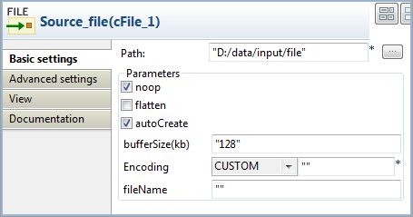
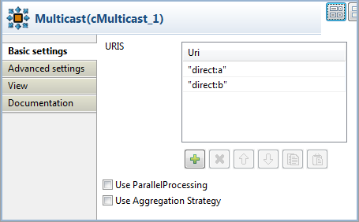
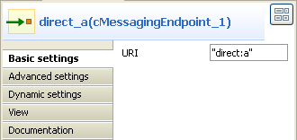
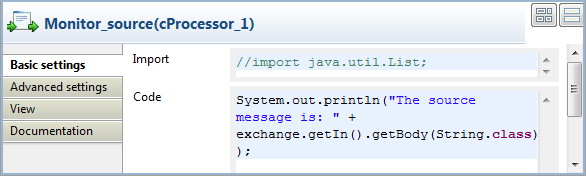
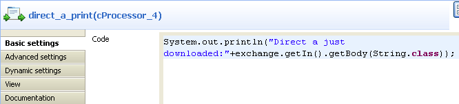

|
Famille de composant |
Routing | |
|
Fonction |
Le composant cMulticast route un ou plusieurs message(s) vers un certain nombre d'endpoints en une seule fois. | |
|
Objectif |
Le cMulticast est utilisé pour router un ou plusieurs message(s) vers un certain nombre d'endpoints en une fois et le(s) traiter de différentes manières. | |
|
Basic settings |
URIS |
Ajoutez autant de lignes que nécessaire dans la table des URIs pour définir les endpoints vers lesquels router les messages. |
|
|
Use ParallelProcessing |
Cochez cette case pour diffuser simultanément en multipoint le(s) message(s) vers les endpoints spécifiés. |
|
|
set timeout |
Cochez cette case et configurez le temps avant suspension dans le champ Timeout, en millisecondes. Si le cMulticast ne réussit pas à envoyer et à traiter les messages durant le temps imparti, il arrête le traitement courant et continue. Cette case apparaît uniquement lorsque la case Use ParallelProcessing est cochée. |
|
|
Use Aggregation Strategy |
Cochez cette case et saisissez un Bean Java prédéfini comme stratégie d'agrégation pour assembler les messages de la source des messages en un seul message de sortie. Le dernier message se comporte comme le message sortant. |
|
Connections |
Route |
Sélectionnez ce lien pour router le(s) message(s) de l'expéditeur à l'endpoint suivant. |
| EndBlock | Sélectionnez ce lien pour router le(s) message(s) du bloc de fin de la Route vers l'endpoint suivant. | |
|
Utilisation |
Le cMulticast peut être utilisé comme composant intermédiaire ou composant de fin dans une Route. | |
|
Limitation |
n/a | |
Dans ce scénario, un composant cMulticast est utilisé pour router un message vers deux endpoints. Un nouveau corps est donné au message source et au message à chaque endpoint. Le composant cProcessor est utilisé pour monitorer les messages.
Dans la Palette, développez le dossier Messaging. Glissez-déposez un cFile et deux cMessagingEndpoint dans l'espace de modélisation graphique.
Du dossier Routing, déposez un composant cMulticast dans l'espace de modélisation graphique.
Du dossier Process, déposez quatre cProcessor dans l'espace de modélisation graphique.
Du dossier Transformation, déposez trois composants cSetBody dans l'espace de modélisation graphique.
Renommez les composants afin d'identifier leur rôle au sein de la Route.
Cliquez-droit sur le composant cMulticast, sélectionnez Row > EndBlock dans le menu contextuel et cliquez sur le composant cProcessor nommé Monitor_endblock.
Cliquez-droit sur le cFile, sélectionnez Row > Route dans le menu contextuel puis cliquez sur le composant cMulticast. Répétez cette étape afin de lier les autres composants dans la Route, à l'aide de liens Row > Route.
Double-cliquez sur le composant cFile nommé Source_file pour ouvrir sa vue Basic settings dans l'onglet Component.
Dans le champ Path, saisissez le chemin d'accès ou parcourez votre système jusqu'au fichier source Hello.txt. Laissez les autres paramètres tels qu'ils sont.
Double-cliquez sur le cMulticast nommé Multicast pour ouvrir sa vue Basic settings.
Dans la table URIS, cliquez deux fois sur le bouton [+] pour ajouter deux lignes et spécifier l'URI des endpoints où le message sera envoyé, "direct:a" et "direct:b" dans cet exemple.
Double-cliquez sur le cMessagingEndpoint nommé direct_a pour ouvrir sa vue Basic settings.
Dans le champ URI, saisissez l'URI de l'endpoint, par exemple "direct:a".
Effectuez la même opération pour direct_b et direct_c puis saisissez les URIs de "direct:b" et "direct:c" respectivement.
Double-cliquez sur le composant cProcessor nommé Monitor_source pour ouvrir sa vue Basic settings.
Dans le champ Code, saisissez le code ci-dessous pour afficher le message source dans la console.
System.out.println("The source message is: " + exchange.getIn().getBody(String.class));Répétez cette étapte pour personnaliser le code des Monitor_endblock, Monitor_direct_a, et Monitor_direct_b, pour afficher le message de chaque endpoint.
Monitor_endblock:
System.out.println("The endblock message is: " + exchange.getIn().getBody(String.class));Monitor_direct_a:
System.out.println("direct a just downloaded: "+exchange.getIn().getBody(String.class));Monitor_direct_b:
System.out.println("direct b just downloaded: "+exchange.getIn().getBody(String.class));Double-cliquez sur le cSetBody nommé Set_new_body to open its Basic settings view in the Component tab.

Sélectionnez SIMPLE dans la liste Language.
Dans le champ Expression, saisissez "New message" comme corps du message.
Répétez cette étape pour configurer le corps du message pour direct:a et direct:b en tant que "message A" et "message B" respectivement.
Cliquez sur l'onglet Code au bas de l'espace de modélisation graphique afin de visualiser le code généré.
Dans le code affiché ci-dessus, le message source est routé depuis (
from) le fichier source"Source_file_cFile_1"vers (.to)direct:aetdirect:bvia"cMulticast_1". Le message est traité par le composant"cProcessor_1"et reçoit le corps de message"New message"par le"cSetBody_3". Le bloc.endde la route est traité par le"cProcessor_2". Le message provenant de (from)"direct_a_cMessagingEndpoint_1"reçoit le corps de message"message A"par le"cSetBody_1"et est traité par le composant"cProcessor_3". Le message dedirect:best traité de la même manière.Cliquez sur la vue Run pour l'afficher, puis cliquez sur le bouton Run afin de lancer l'exécution de votre Route. Vous pouvez également appuyer sur la touche F6 pour l'exécuter

Résultat : Le message du fichier source est Hello world!. Le message routé vers direct:a et direct:b reçoit le corps de message message A et message B respectivement. Le message du bloc de fin de cette Route est New message, configuré par le composant nommé Set_new_body.